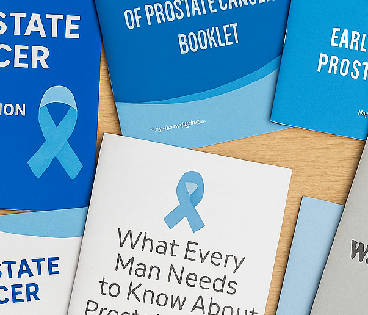

The guide for your cancer journey
Finding out you have cancer can feel confusing and scary. It might seem like you're getting lots of puzzle pieces of information and it's hard to see the whole picture.
You don’t have to figure it all out at once!
We’ve broken things down into several steps that outline your journey. For each step, you'll find:
- Questions to help you talk to your doctors and nurses.
- Good websites with safe and helpful information.
You're in control. Explore the section that feels right for you, or select “Start Here” to see a shorter list of questions.
